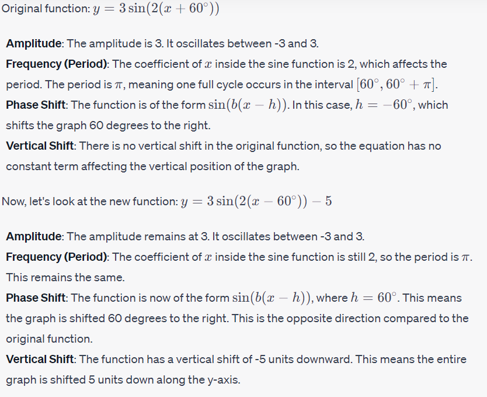
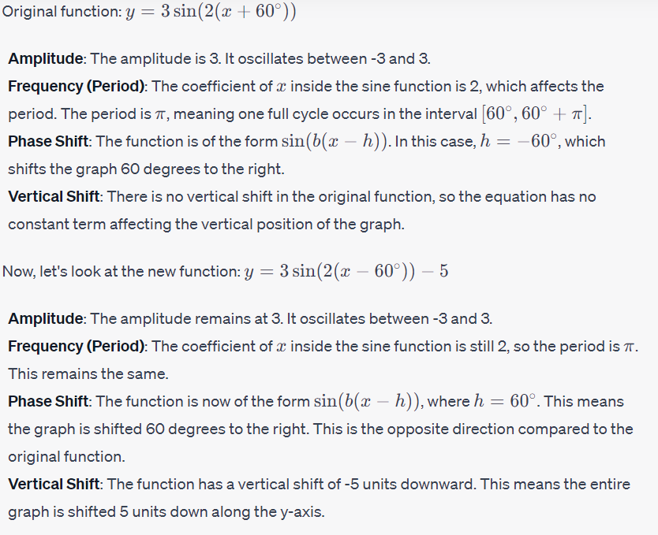

Warm Up Activity

1. Sketch the graph of f(x) = 3 sin(2(x + 60°))
2. If the equation of the function were changed to y = 3 sin(2(x - 60°)) - 5, how would the graph of the function change? How would it stay the same?
|
Solution:  |
1. Sketch the graph of f(x) = 3 sin(2(x + 60°))
2. If the equation of the function were changed to y = 3 sin(2(x - 60°)) - 5, how would the graph of the function change? How would it stay the same?
|
Solution:  |